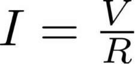
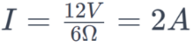

A fim de permitir uma melhor visualização das leis de Ohm, essa página irá mostrar pequenos exemplos de aplicações práticas das fórmulas apresentadas.
1. Fórmula da Lei de Ohm

Onde:
I = Corrente (em amperes, A)
V = Tensão (em volts, V)
R = Resistência (em ohms, Ω)
2. Substituindo os Valores:
Dessa forma, podemos concluir que a corrente que passa pelo circuito é de 2 amperes (A).